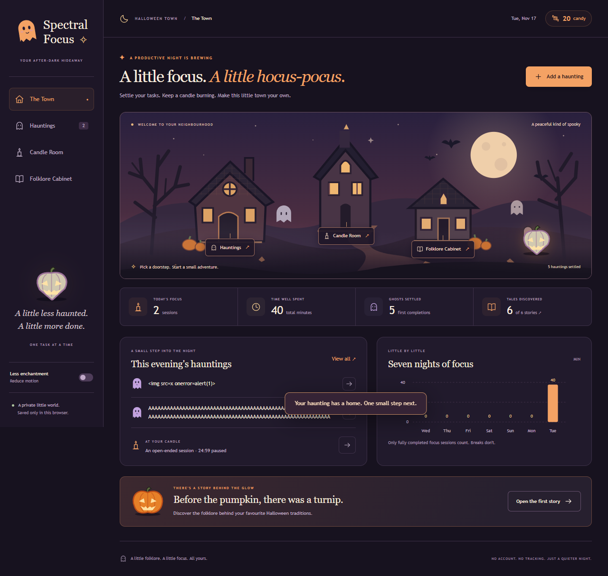
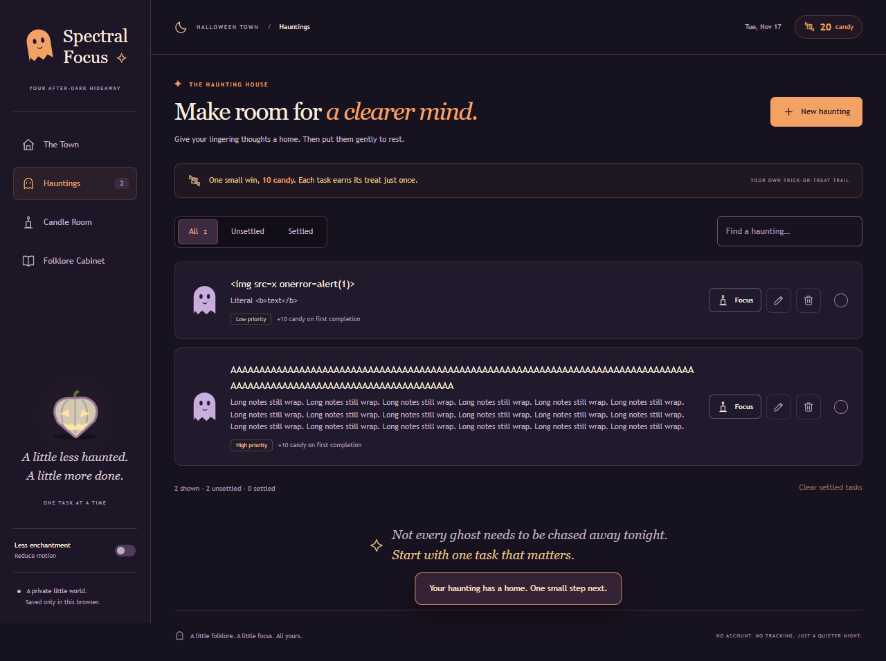
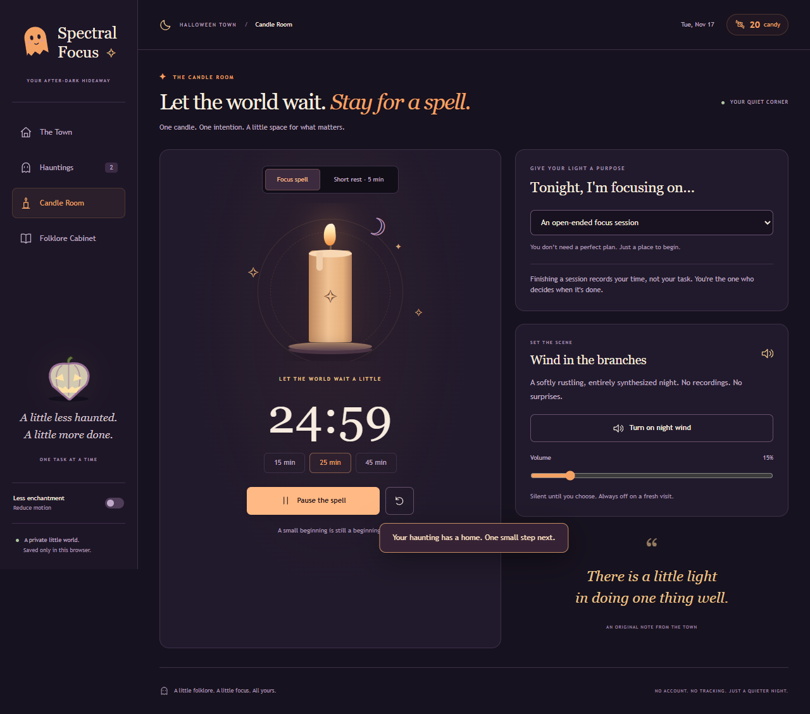
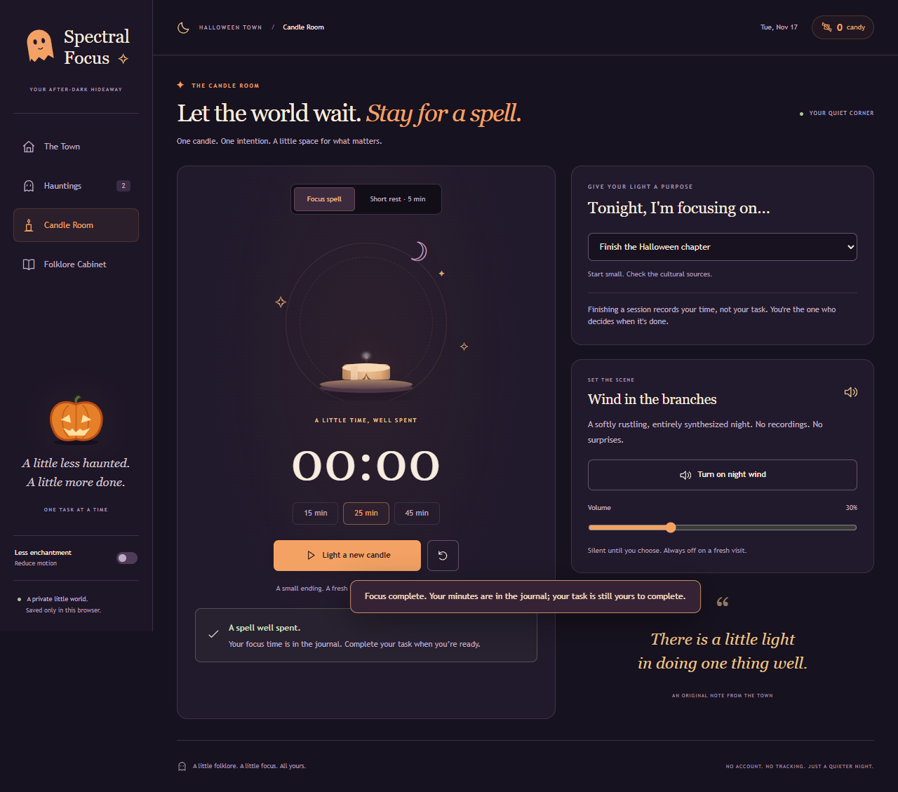
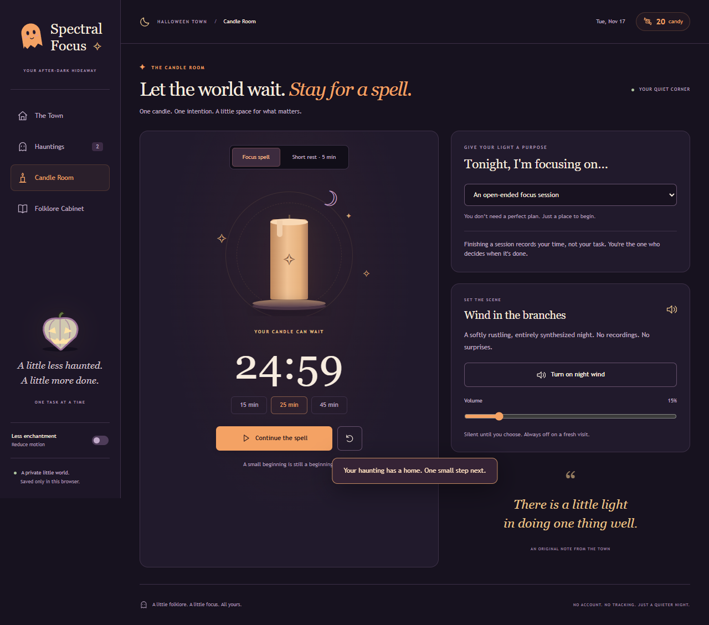
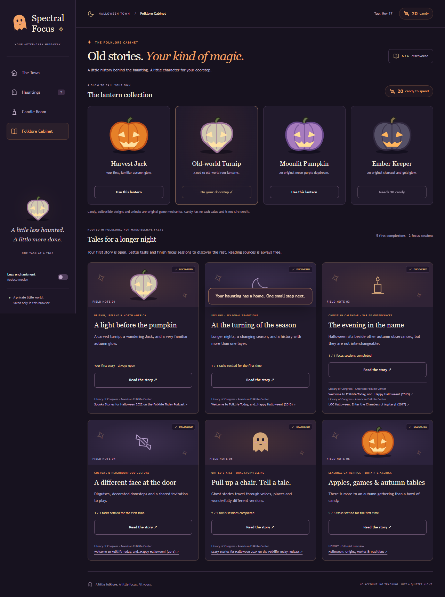
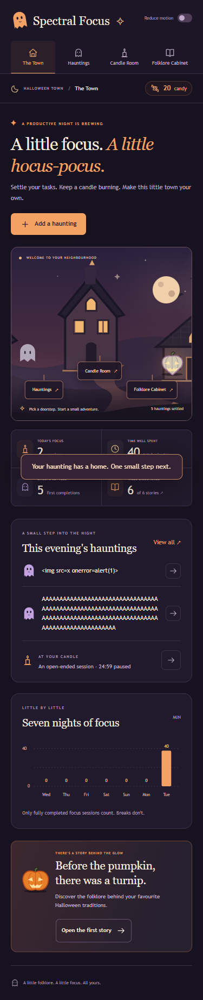
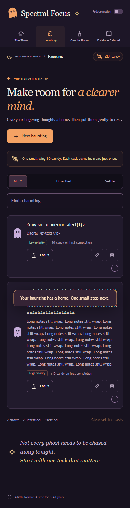
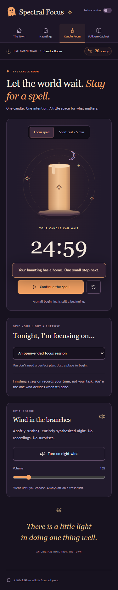
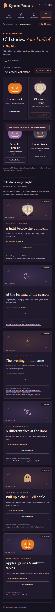

Ten actual Chromium screenshots at 1280px and 375px. These are isolated test sessions, not a user's productivity records. Deliberately long task titles stress text wrapping.
The Town · 1280px

Original scene; selected lantern and counters reflect the completed test flow.
Hauntings · 1280px

120-character title and long note wrapping.
Candle Room · 1280px

An active focus session with its candle flame lit.

A finished session: the candle has burned down and smoke rises from the wick.

Paused-state comparison, with notes and sound settings.
Folklore Cabinet · 1280px

Milestones earned during controlled-clock tests; source links are always available.
Small-screen views · 375px

Town

Hauntings

Candle Room

Folklore Cabinet
Generated by npm run test:browser. See TESTING.md for scope and limitations, and ACCEPTANCE.md for all twelve criteria.